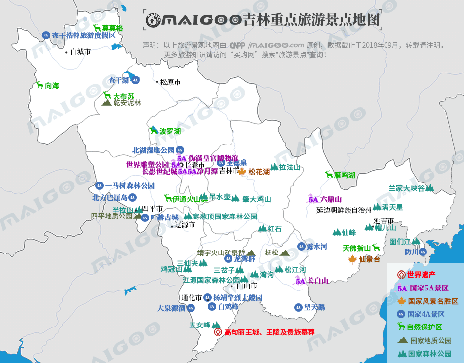

| | | | | |
| - | - | - | - | - |
|<b>别名</b>|白山黑土||<b>著名景点</b>|长影世纪城、净月潭、伪满皇宫、松花湖、向海、长白山等|
|<b>行政区类别</b>|省||<b>机 场</b>|长春龙嘉国际机场、延吉朝阳川机场、长白山机场、白城长安机场等|
|<b>所属地区</b>|中国东北地区||<b>火车站</b>|长春站、长春西站、吉林站、四平站、白城站等|
|<b>下辖地区</b>|长春、吉林市等8个地级市和延边1个自治州||<b>车牌代码</b>|吉A-吉K|
|<b>电话区号</b>|0431-0439||<b>GDP</b>|15288亿元（2017年）|
|<b>邮政区码</b>|130000-138000||<b>人均GDP</b>|56102元|
|<b>地理位置</b>|中国东北中部，东北亚地理中心||<b>省 会</b>|长春市|
|<b>面 积</b>|18.74万平方千米||<b>原省会</b>|吉林市|
|<b>人 口</b>|2717.43万人（2017年）||<b>重点大学</b>|吉林大学、东北师范大学|
|<b>方 言</b>|东北官话||-|-|
|<b>气候条件</b>|温带季风气候||-|-|
| <b>吉林生活文化</b> | <b>吉林特色文化</b> | <b>吉林曲艺文化</b> | <b>吉林建筑文化</b> | <b>吉林宗教文化</b> |
| - | - | - | - | - |
| <a href="javascript:;" onclick="live(this);">习俗/民俗</a> | <a href="javascript:;" onclick="feature(this);">长白山森林号子</a> | <a href="javascript:;" onclick="art(this);">吉林吉剧</a> | <a href="javascript:;" onclick="building(this);">吉林建筑风格</a> | - |
| <a href="javascript:;" onclick="live(this);">方言文化</a> | <a href="javascript:;" onclick="feature(this);">马氏布偶</a> | <a href="javascript:;" onclick="art(this);">吉林新城戏</a> | - | - |
| <a href="javascript:;" onclick="live(this);">节日文化</a> | <a href="javascript:;" onclick="feature(this);">东北秧歌</a> | <a href="javascript:;" onclick="art(this);">二人转</a> | - | - |
| <a href="javascript:;" onclick="live(this);">嫁娶文化</a> | <a href="javascript:;" onclick="feature(this);">踩高跷</a> | - |-|-|
| <a href="javascript:;" onclick="live(this);">饮食文化</a> | <a href="javascript:;" onclick="feature(this);">马头琴</a> | -|-|-|
## <i class="fa fa-file-text-o"></i>&nbsp;目录（Table of Contents）
+ [I. 总路线图（参考"广东"）](guangdong.html)
+ [II. 景点](#two)
+ [III. 路线规划（参考"广东"）](guangdong.html)
<h2 id="two"><i class="fa fa-star-o"></i>&nbsp;景点</h2>
